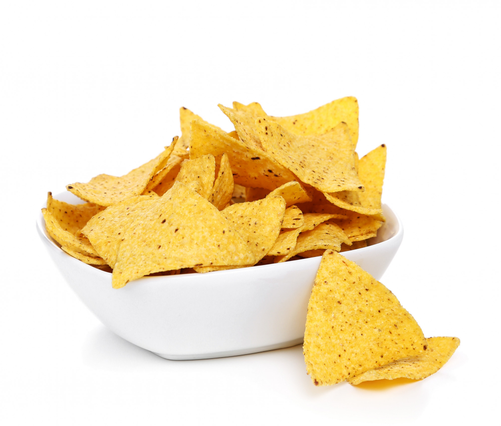

Papad

Description
Papad, also known as papadum, is a popular snack originating from the Indian subcontinent.
It’s made from a dough of black gram bean flour, which is either deep-fried or cooked over
an open flame until crunchy!
Ingredients
- Urad dal papads (as many as you’d like to serve)
Instructions
- Heat a non-stick pan or tava (griddle) over low to medium heat.
- Place the urad dal papads on the pan without any oil.
- Cook them on both sides until they puff up and turn crispy. This usually takes just a few seconds per side.
- Remove from the pan and let them cool slightly.
Serve your homemade papads as a crunchy snack or accompaniment to your meal!
Enjoy the simplicity and crunchiness of these easy papads! 😊👍